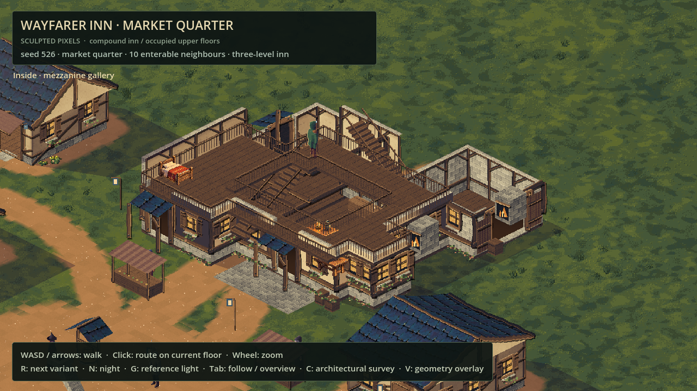
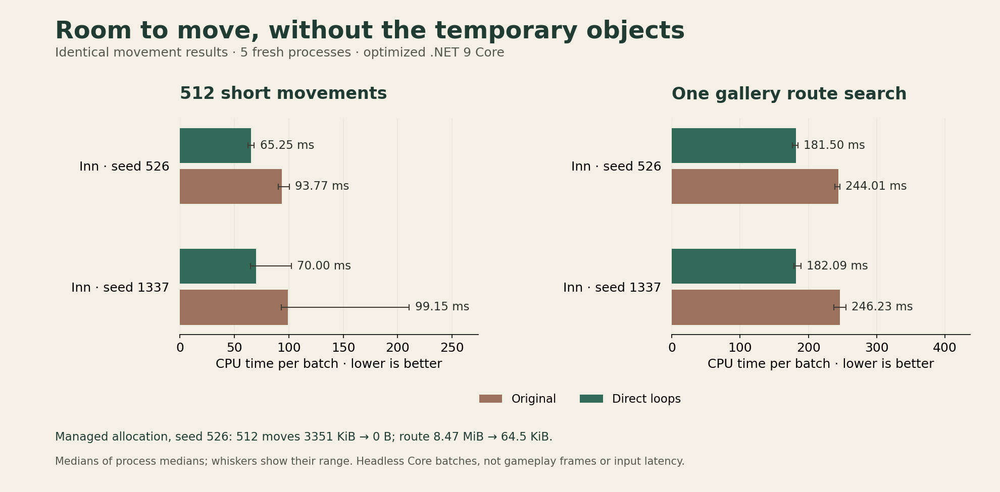

Lighter footsteps in the Wayfarer
24 October 2026 · Day 33
A walk through the Wayfarer Inn asks thousands of small questions about walls, furniture, floors and stairs. This update makes those questions cheaper, giving Sprawl more room for a busy, inhabited world.
The hidden work beneath a step
The inn has an occupied hall, a mezzanine gallery and rooms beneath the roof. Your feet need to stay clear of furniture and walls, the gallery needs to keep you away from its open centre, and a stair must carry you continuously between the right landings.
Movement checks that geometry in small increments. Click-to-walk repeats the same checks while searching for a route. The previous implementation created temporary objects for its wall filters, floor enquiries and upper-floor footprint on each enquiry. A tiny allocation became a large pile when a search tried thousands of possible steps.
Those temporary objects eventually need collecting. Removing them gives the runtime less housekeeping to do alongside the rest of the game.
Following the existing floors
The movement code now reads directly through the inn's geometry. It checks footprint corners in their original order and keeps the same collision distances, small sweep steps and wall sliding. Stair identity, progress and landing transitions follow the original rules.
A frozen copy of the previous movement code acts as a reference. Tests compare positions and heights exactly, including awkward boundary cases, long movements and both directions on the stairs. They also check different generated inns and independent readers using the same plan.

What changed in the measurements
Five fresh processes compared the implementations on three generated inns, alternating their order and retaining every sample. Each result had to agree before a timing could be accepted.

For the development inn, a batch of 512 short movements fell from 93.8 to 65.2 milliseconds. A gallery route search fell from 244.0 to 181.5 milliseconds. The other two seeds showed the same direction of improvement.
The larger change is the temporary storage: that movement batch fell from 3.43 megabytes to zero managed allocation. The gallery search fell from 8.88 megabytes to 66 kilobytes, a reduction of more than 99 percent. Its search buffers and returned path still take space.
These are specific headless Core workloads. A complete player click also passes through input, the town's other collision layers and presentation. Frame rate, mobile performance and complete input latency need separate measurements. The graph keeps the variation between runs visible.
More room for the next traveller
This is a foundation for the inn's daily life: walking, following a route and climbing between its occupied floors can ask the same questions with less repeated CPU work and temporary storage. The reference tests stay in the project, so future changes can be checked against the movement that already works.